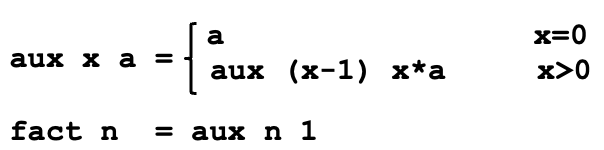
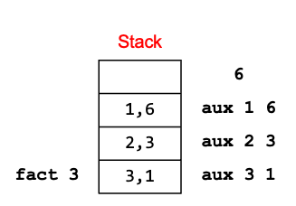
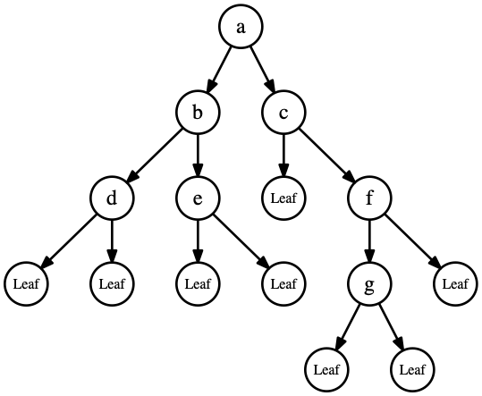
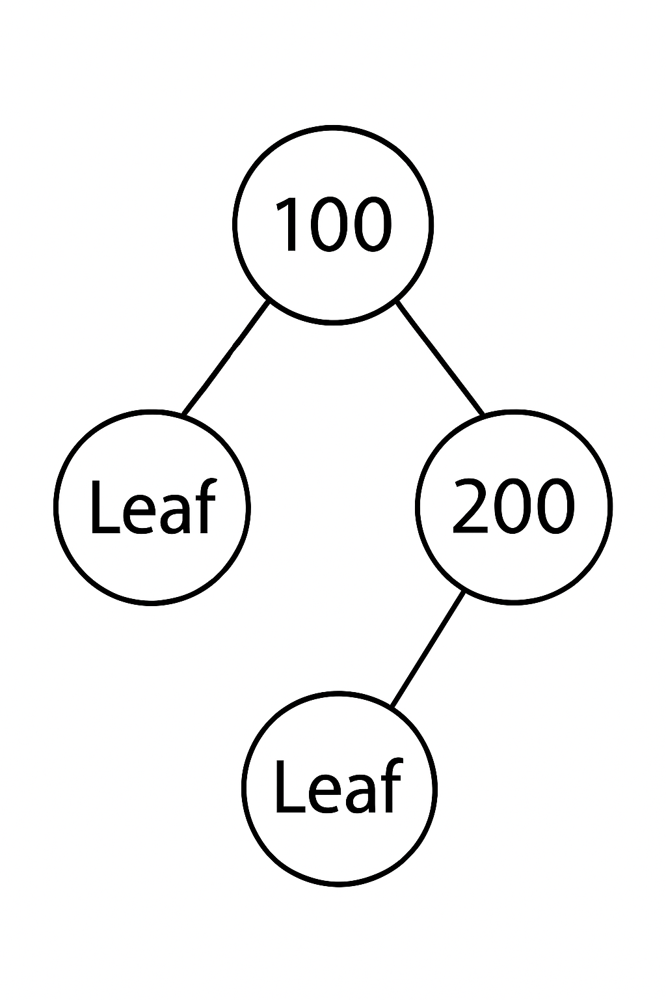
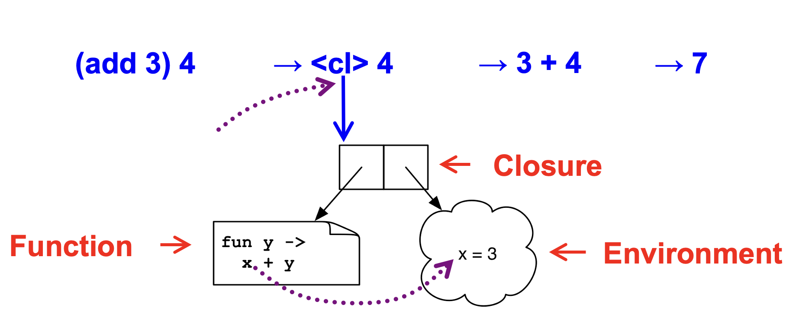

2 Functional Programming with OCaml
First-class functions: Functions are treated as values. They can be passed as arguments to other functions and returned as results.
Immutability by default: Variables are typically assigned once, encouraging a functional style of programming.
Algebraic data types and pattern matching: These provide expressive and concise ways to define and manipulate structured data.
- Type inference
OCaml is statically typed, but there is no need to write type annotations explicitly.
The language supports parametric polymorphism, similar to Generics in Java, templates in C++
Exceptions
Automatic garbage collection
2.1 Books
Developing Applications with Objective Caml https://caml.inria.fr/pub/docs/oreilly-book/ocaml-ora-book.pdf
Introduction to the Objective Caml Programming Language http://courses.cms.caltech.edu/cs134/cs134b/book.pdf
Real World OCaml 2nd Edition https://dev.realworldocaml.org/
OCaml from the Very Beginning https://johnwhitington.net/ocamlfromtheverybeginning/mlbook.pdf
Cornell cs3110 book https://cs3110.github.io/textbook/cover.html is another course which uses OCaml; it is more focused on programming and less on PL theory than this class is.
ocaml.org is the home of OCaml for finding downloads, documentation, etc. The tutorials are also very good and there is a page of books.
2.1.1 Similar Courses
If you’re interested, I’ve listed several similar courses from other universities. For example, Cornell offers a comparable course—CS 3110—and there are also similar offerings from the University of Washington, Princeton, Harvard, and UIUC. You can check out their websites; Cornell’s, in particular, provides an online textbook along with videos and other helpful resources.
You might find it helpful to watch their lectures, go through their examples, or even try out their projects or exams. They all use OCaml, and the course structure is quite similar.
So, it’s more than just a textbook—you have access to notes, slides, exams, and other useful materials.
2.2 Installing OCaml
shell
> ocaml --version The OCaml toplevel, version 5.4.1
2.3 OPAM: OCaml Package Manager
ounit, a testing framework similar to minitest
utop, a top-level interface
dune, a build system for larger projects
shell
> dune --version 3.21.1
2.4 Running OCaml Programs
You can compile OCaml programs with either the bytecode compiler (ocamlc) or the native-code compiler (ocamlopt). The -o option specifies the output file name.
ocamlc -o main main.mlocamlc -c compiles the source file without linking and produces .cmo (compiled object) and .cmi (compiled interface) files. ocamlopt produces .cmx files, which contain native code: faster, but not platform-independent (or as easily debugged)
ocamlopt -o main main.mlYou can also run an OCaml program directly using the OCaml interpreter (ocaml). This is similar to running a Python program.
ocaml main.ml2.5 Building Projects with dune
ocamlc is convenient for compiling a single OCaml file. However, for class projects you will use dune, the build system. Dune automatically discovers dependencies and invokes the compiler and linker for you. Let us create a new project using dune:
shell
> dune init project HelloWorld Success: initialized project component named HelloWorld
shell
> tree HelloWorld HelloWorld ├── HelloWorld.opam ├── _build │ └── log ├── bin │ ├── dune │ └── main.ml ├── dune-project ├── lib │ └── dune └── test ├── dune └── test_HelloWorld.ml 5 directories, 8 files
Build the project:
cd HelloWorld
dune buildRun it:
dune exec bin/main.exe_build/default/bin/main.exedune runtest2.6 OCaml Basics
A series of open statements for including other modules
A series of declarations for defining datatypes, functions, and constants
A series of (though often just one) toplevel expressions to evaluate.
OCaml REPL
(* A small OCaml program *) print_string "Hello world!\n";; [Output] Hello world! - : unit = ()
OCaml REPL
open Printf let message = "Hello world";; (printf "%s\n" message);; [Output] val message : string = "Hello world" Hello world - : unit = ()
shell
> ocamlc hello.ml -o hello > ./hello Hello world!
(* main.ml *) let main () = print_int (Util.add 10 20); print_string "\n" let () = main ()
(* util.ml *) let add x y = x + y
Compile and run:
shell
> ocamlc util.ml main.ml -o main
Or compile separately
shell
> ocamlc -c util.ml > ocamlc util.cmo main.ml
shell
> ./main 30
2.7 OCaml toplevel, a REPL for OCaml
We will begin exploration of OCaml in the interactive top level. A top level is also called a read-eval-print loop (REPL) and it works like a terminal shell. To run the ocaml toplevel, simply run ‘ocaml‘
% ocaml
OCaml version 5.4.0
# print_string "Hello world!
";;
Hello world!
- : unit = ()To load a .ml file into top level:
#use "hello.ml"
Hello world!
- : unit = ()# exit 0;; |
2.8 First OCaml Example
OCaml REPL
(* A small OCaml program (* with nested comments *) *) let x = 37;; let y = x + 5;; print_int y;; [Output] val x : int = 37 val y : int = 42 42 - : unit = ()
OCaml REPL
print_int 10;; [Output] 10 - : unit = ()
OCaml REPL
print_int 10.5;; [Output] Line 1, characters 10-14: 1 | print_int 10.5;; ^^^^ Error: The constant 10.5 has type float but an expression was expected of type int
OCaml REPL
1 + 0.5;; [Output] Line 1, characters 4-7: 1 | 1 + 0.5;; ^^^ Error: The constant 0.5 has type float but an expression was expected of type int
OCaml REPL
1 + true;; [Output] Line 1, characters 4-8: 1 | 1 + true;; ^^^^ Error: The constructor true has type bool but an expression was expected of type int
OCaml REPL
print_int "This function expected an int";; [Output] Line 1, characters 10-41: 1 | print_int "This function expected an int";; ^^^^^^^^^^^^^^^^^^^^^^^^^^^^^^^ Error: This constant has type string but an expression was expected of type int
2.9 Expressions
In OCaml, expressions are the fundamental building blocks of programs, and evaluating an expression always produces a value. Unlike many imperative languages, which distinguish between statements (actions) and expressions (values), OCaml is expression-oriented—almost everything in the language is an expression that yields a result.
Type checking rules (static semantics): produce a type or fail with an error message
Evaluation rules (dynamic semantics): produce a value or an exception or infinite loop. Evaluation rules are used only on expressions that type-check
We use metavariable e to designate an arbitrary expression.
2.10 Values
A value is an expression that is final. For example, 34 and true are values because we cannot evaluate them any further. On the contrary, 34+17 is an expression, but not a value because we can further evaluate it. Evaluating an expression means running it until it is a value. For example 34+17 evaluates to 51, which is a value. We use metavariable v to designate an arbitrary value
2.11 Types
Types classify expressions. It is the set of values an expression could evaluate to. Examples include int, bool, string, and more. We use metavariable t to designate an arbitrary type. Expression e has type t if e will (always) evaluate to a value of type t. For example 0, 1, and -1 are values of type int while true has type bool. 34+17 is an expression of type int, since it evaluates to 51, which has type int. We usually write e : t to say e has type t. The process of determining e has type t is called type checking simply, typing.
2.12 If expression
The syntax of the if expression is
if e1 then e2 else e3We type check the if expression using the following type checking rules:
\frac{\Gamma \vdash e_1 : bool \quad \Gamma \vdash e_2 : t \quad \Gamma \vdash e_3 : t} {\Gamma \vdash \texttt{if e1 then e2 else e3} : t}
Premises (top part) — things you already know or assumptions.
Conclusion (bottom part) — what follows logically from the premises.
The line separates what’s assumed from what’s derived.
Condition must be a bool: The expression e1 (the condition) must have type bool. For example, writing if 1 then ... causes a type error, since 1 has type int, not bool.
Then- and Else-branches must have the same type: Both e2 and e3 must evaluate to values of the same type.
OCaml REPL
if 7 > 42 then "hello" else "goodbye";; [Output] - : string = "goodbye"
OCaml REPL
if 7 > 42 then "hello" else 10;; [Output] Line 1, characters 28-30: 1 | if 7 > 42 then "hello" else 10;; ^^ Error: The constant 10 has type int but an expression was expected of type string
OCaml REPL
if 10>5 then 100 else 200;; [Output] - : int = 100
Quiz: To what value does this expression evaluate?
if 10 < 20 then 2 else 1
Quiz: To what value does this expression evaluate?
if 10 < 20 then 2 else 1
Answer: 2. Since 10<20 is true, the value of the if expression is equal to the value of the true branch.
Quiz: To what value does this expression evaluate?
if 10 < 20 then print_int 10
Quiz: To what value does this expression evaluate?
if 10 < 20 then print_int 10
Answer: Unit (). Since print_int 10 returns unit, we did not need to include an else branch.
2.13 Functions
OCaml functions are like mathematical functions. They compute a result from provided arguments. We use let to define a function:
We now define the function next, which accepts an integer n and produces its successor.
OCaml REPL
let next n = n + 1;; next 10;; (* call the function next with an argument 10 *) [Output] val next : int -> int = <fun> - : int = 11
OCaml REPL
let rec fact n = if n = 0 then 1 else n * fact (n-1);; fact 5;; [Output] val fact : int -> int = <fun> - : int = 120
Quiz: Write a function sum that takes a positive integer n and returns the value of 1+2+3+...n.
OCaml REPL
let rec sum n = if n = 1 then 1 else n + sum (n-1);; sum 10;; [Output] val sum : int -> int = <fun> - : int = 55
2.13.1 Calling Functions (Function Application)
In OCaml, calling a function is very straightforward — you just write the function name followed by its arguments, separated by spaces (not commas, and no parentheses are required unless for grouping). The calling syntax is:
f e1 e2 … enOCaml REPL
let square x = x * x;; square 5;; [Output] val square : int -> int = <fun> - : int = 25
OCaml does not truly have “argumentless” functions. Instead, a nullary function is defined as one that takes the special value ( ) of type unit.
OCaml REPL
let greet () = "Hello";; greet ();; [Output] val greet : unit -> string = <fun> - : string = "Hello"
Locate the definition of f, i.e., let rec f x1 … xn = e.
Evaluate the arguments e1 … en to obtain values v1 … vn.
Substitute the values v1 … vn for the parameters x1 … xn in the function body e, yielding a new expression e’.
Evaluate e’ to value v, which is the final result
OCaml REPL
let rec fact n = if n = 0 then 1 else n * fact (n-1);; [Output] val fact : int -> int = <fun>
expression | semantics |
fact (1+1) | evaluate the argument 1+1 |
fact 2 | substitute every occurrence of n inside the body of fact with 2 |
if 2=0 then 1 else 2*fact(2-1) | evaluate the if expression |
2 * fact 1 | result of the else branch |
2 * (if 1=0 then 1 else 1*fact(1-1)) | substitute n with 1 |
2 * 1 * fact 0 | evaluate fact 0 |
2 * 1 * (if 0=0 then 1 else 0*fact(0-1)) | base case |
2 * 1 * 1 | |
2 |
Quiz: To what value does this code evaluate?
let rec mystery n m=if n>m then 0 else n + mystery (n+1) m;;
mystery 5 10;;
Quiz: To what value does this code evaluate?
let rec mystery n m=if n>m then 0 else n + mystery (n+1) m;;
mystery 5 10;;Answer: 45. mystery n m computes the sum of the integers from n to m, inclusive. For example, mystery 5 10 = 45 (since 5 + 6 + 7 + 8 + 9 + 10 = 45)
2.13.2 Function Types
OCaml REPL
(* function add takes two integer arguments and returns an integer value *) let add x y = x + y;; [Output] val add : int -> int -> int = <fun>
OCaml REPL
(* function greet takes a unit and returns a unit *) let greet () = print_string "What’s up?";; [Output] val greet : unit -> unit = <fun>
2.14 Type Checking of Function Application
As we have seen before, the syntax of a function application is
f e1 … enWe use the following type checking rule for a single argument function application
\frac{\Gamma \vdash f:t_1 \rightarrow t_2 \quad \Gamma \vdash e : t_1 } {\Gamma \vdash \texttt{f e} : t_2} It reads: if f has type t1→t2 and e has type t1 then (f e) has type t2
In general, we use the following type checking rule for the function application \frac{\Gamma \vdash f:t_1 \rightarrow t_2 ... \rightarrow t_n \rightarrow u, \quad \Gamma \vdash e_1 : t_1 \quad \Gamma \vdash e_2 : t_2 \quad ... \Gamma \vdash e_n : t_n } {\Gamma \vdash \texttt{f e1 e2 .. en} : u} It reads: if f : t1 → … → tn → u and e1 : t1, …, en : tn then the type of f e1 … en is u.
OCaml REPL
not;; true;; not true;; [Output] - : bool -> bool = <fun> - : bool = true - : bool = false
OCaml REPL
(+);; (* int -> int -> int *) (1+2);; (* int *) (3*4);; (* int *) (+) (1+2) (3*4);; (* int *) (1+2) + (3*4);; (* int *) [Output] - : int -> int -> int = <fun> - : int = 3 - : int = 12 - : int = 15 - : int = 15
2.14.1 More Examples on Function Type Checking
As illustrated by the preceding examples, OCaml does not require programmers to explicitly annotate types as in languages such as C or Java. Instead, OCaml employs the Hindley–Milner type system to automatically infer the types of expressions before performing type checking.
OCaml REPL
let double x = x * 2;; [Output] val double : int -> int = <fun>
OCaml REPL
let double x = x * 2;; double 10;; [Output] val double : int -> int = <fun> - : int = 20
OCaml REPL
let double x = x * 2;; double 10.5;; [Output] val double : int -> int = <fun> Line 1, characters 8-12: 1 | double 10.5;; ^^^^ Error: The constant 10.5 has type float but an expression was expected of type int
OCaml REPL
(* Adding three integers *) let add x y z = x + y + z;; [Output] val add : int -> int -> int -> int = <fun>
OCaml REPL
let fn x = (int_of_float x) * 3;; fn 2.5;; [Output] val fn : float -> int = <fun> - : int = 6
OCaml REPL
int_of_float 3.7;; (* = 3 *) int_of_float 3.0;; (* = 3 *) int_of_float (-3.7);; (* = -3 *) [Output] - : int = 3 - : int = 3 - : int = -3
OCaml REPL
(* Greatest Common Divisor of Two Positive Integer Numbers *) let rec gcd a b = if b = 0 then a else gcd b (a mod b);; (* mod: int → int → int. It implies a and b must be int. The return type is int because it returns a *) [Output] val gcd : int -> int -> int = <fun>
OCaml REPL
(* Sum of the first n natural numbers *) let rec sum n = if n = 0 then 0 else n + sum (n-1);; (* n=0 implies n must be int. Return type is int because it returns 0 in one branch. *) [Output] val sum : int -> int = <fun>
OCaml REPL
(* Prime Factors of a Given Positive Integer *) let rec aux d n = if n = 1 then [] else if n mod d = 0 then d :: aux d (n / d) else aux (d + 1) n ;; let factors n = aux 2 n;; factors 210;; [Output] val aux : int -> int -> int list = <fun> val factors : int -> int list = <fun> - : int list = [2; 3; 5; 7]
2.14.2 Mutually Recursive Functions
Mutually recursive functions are functions that call each other (directly or indirectly). You define them using the and keyword along with let rec.
OCaml REPL
let rec odd n = if n = 0 then false else even(n-1) and even n = if n = 0 then true else odd(n-1);; even 100;; odd 101;; [Output] val odd : int -> bool = <fun> val even : int -> bool = <fun> - : bool = true - : bool = true
2.14.3 Polymorphic Types
OCaml REPL
(* Swapping two values of a tuple (we will cover tuples later) *) let swap (x,y) = (y,x);; [Output] val swap : 'a * 'b -> 'b * 'a = <fun>
OCaml REPL
(* structural equality *) let eq x y = x = y;; eq 3 3;; (* true *) eq 1 2;; (* false *) eq "hello" "hello";; (* true *) eq [1;2] [1;2];; (* true *) eq [1;2] [2;1];; (* false *) eq "hello" 1;; (* type error *) [Output] val eq : 'a -> 'a -> bool = <fun> - : bool = true - : bool = false - : bool = true - : bool = true - : bool = false Line 1, characters 12-13: 1 | eq "hello" 1;; (* type error *) ^ Error: The constant 1 has type int but an expression was expected of type string
public static <T> boolean eq(T x, T y) {
return x.equals(y);
}Quiz: What is the type of the following function?
let f x y =
if x = y then 1 else 0
Quiz: What is the type of the following function?
let f x y =
if x = y then 1 else 0Answer: ’a -> ’a -> int
2.14.4 Type annotations
The OCaml compiler can infer types automatically, but type inference can be tricky and sometimes produces vague error messages. To avoid this, we can provide type annotations manually. Annotations are useful for clarity, documentation, and resolving ambiguities.
OCaml REPL
let (x : int) = 3;; [Output] val x : int = 3
OCaml REPL
let fn (x:int):float = (float_of_int x) *. 3.14;; (* (x : int) explicitly states that x is an integer. float states the return type is float *) let add (x:int) (y:int):int = x + y;; [Output] val fn : int -> float = <fun> val add : int -> int -> int = <fun>
OCaml REPL
let id x = x;; [Output] val id : 'a -> 'a = <fun>
OCaml REPL
let id (x:int) = x;; (* This annotation constrains the function to take an int as its argument and to return an int. *) [Output] val id : int -> int = <fun>
2.15 Lists
OCaml REPL
[];; [1; 2; 3; 4];; ["apple"; "banana"; "cherry"];; [Output] - : 'a list = [] - : int list = [1; 2; 3; 4] - : string list = ["apple"; "banana"; "cherry"]
To evaluate [e1; e2;...;en], we evaluate e1 to a value v1, e2 to a value v2, and en to a value vn, and return [v1;…;vn].
In OCaml, the list notation [e1; e2] is syntactic sugar for using the cons operator ::(pronounced “cons”). :: constructs a list by prepending an element to an existing list. Specifically:
[e1; e2];; (* syntactic sugar *)e1 :: e2 :: [];; (* desugared form *)OCaml REPL
let y = [1; 1+1; 1+1+1] ;; let x = 4::y ;; let z = 5::y ;; let m = "hello" :: "bob" ::[];; [Output] val y : int list = [1; 2; 3] val x : int list = [4; 1; 2; 3] val z : int list = [5; 1; 2; 3] val m : string list = ["hello"; "bob"]
2.15.1 Typing Lists
The type of an empty list [ ] is ’a list. The type of Cons is \frac{\Gamma \vdash e_1 : t \quad \Gamma \vdash e_2 : t\;\text{list}} {\Gamma \vdash e_1 :: e_2 : t\;\text{list}} \quad (\text{T-Cons})
It reads: if (e1 : t) and (e2 : t list) then (e1::e2) : (t list).
OCaml REPL
let l = [];; let m = [[1];[2;3]];; let w = ["apple"; "banana"; "watermelon"];; [Output] val l : 'a list = [] val m : int list list = [[1]; [2; 3]] val w : string list = ["apple"; "banana"; "watermelon"]
OCaml REPL
let y = 0::[1;2;3] ;; [Output] val y : int list = [0; 1; 2; 3]
OCaml REPL
let x = [1;"world"] ;; (* all elements must have same type *) [Output] Line 1, characters 11-18: 1 | let x = [1;"world"] ;; (* all elements must have same type *) ^^^^^^^ Error: This constant has type string but an expression was expected of type int
Quiz: What is the type of the following expression?
[1.0; 2.0; 3.0; 4.0]
Quiz: What is the type of the following expression?
[1.0; 2.0; 3.0; 4.0]Answer: float list
Quiz: What is the type of the following expression?
10::[20]
Quiz: What is the type of the following expression?
10::[20]Answer: int list
Quiz: What is the type of the function f?
let f a = "umd"::[a]
Quiz: What is the type of the function f?
let f a = "umd"::[a]Answer: string -> string list
2.15.2 :: Operator
OCaml REPL
let y = 0::[1;2;3] ;; let w = [1;2]::y ;; (* error *) [Output] val y : int list = [0; 1; 2; 3] Line 1, characters 16-17: 1 | let w = [1;2]::y ;; (* error *) ^ Error: The value y has type int list but an expression was expected of type int list list Type int is not compatible with type int list
Quiz: Can you construct a list y such that [1;2]::y?
Yes. If the type of y is int list list,i.e., [1;2]::[[3;4]]. Each element of this list is an int list.
OCaml REPL
let y = [[3;4;5];[6]];; [1;2]::y;; [Output] val y : int list list = [[3; 4; 5]; [6]] - : int list list = [[1; 2]; [3; 4; 5]; [6]]
The empty list [ ]
Or a pair consisting of an element and a list

2.15.3 Lists of Lists
OCaml REPL
[ [9; 10; 11]; [5; 4; 3; 2] ];; [Output] - : int list list = [[9; 10; 11]; [5; 4; 3; 2]]
OCaml REPL
let x = [1;2;3;4];; let y = 5::x;; let z = 6::x;; [Output] val x : int list = [1; 2; 3; 4] val y : int list = [5; 1; 2; 3; 4] val z : int list = [6; 1; 2; 3; 4]
2.16 Pattern Matching
Pattern matching in OCaml is a powerful way to destructure values, test their shape, and bind variables to parts of the value — all in a single, concise construct. It is used extensively with algebraic data types (like option, list, trees, and custom types).
match e with
| p1 -> e1
| …
| pn -> ene is the expression being matched.
p1, ..., pn are patterns.
e1, ..., en are the expressions executed when a pattern matches.
The pattern-matching part of the match is a sequence of clauses, each one of the form: pattern → expr, separated by vertical bars (|). The clauses are processed in order, and only the expr of first matching clause is evaluated. The value of the entire match expression is the value of the expr of the matching clause; If no pattern matches expr, your match is said to be non-exhaustive and when a match fails it raises the exception Match_failure.
Each pattern pi must be a pattern of type t. (i.e., e and the patterns have same type)
Each branch expression ei must have the same type t2. So the whole match expression has type t2.
OCaml REPL
let neg x = match x with (* x must be bool *) | true -> false | false -> true;; neg true;; neg (10 > 20);; [Output] val neg : bool -> bool = <fun> - : bool = false - : bool = true
OCaml REPL
let is_empty l = match l with [] -> true | (h::t) -> false ;; is_empty [];; is_empty [1];; is_empty [1;2];; [Output] val is_empty : 'a list -> bool = <fun> - : bool = true - : bool = false - : bool = false
OCaml REPL
let is_odd x = match x mod 2 with 0 -> false | 1 -> true | _ -> raise (Invalid_argument "is_odd");; [Output] val is_odd : int -> bool = <fun>
Quiz: In is_odd, why do we need the third match case | _ ->?
-1 mod 2 returns -1. The mod operator can produce values other than 0 and 1.
OCaml REPL
11 mod 2;; 10 mod 2;; -11 mod 2;; [Output] - : int = 1 - : int = 0 - : int = -1
OCaml REPL
let imply v = match v with (true,true) -> true | (true,false) -> false | (false,true) -> true | (false,false) -> true;; [Output] val imply : bool * bool -> bool = <fun>
OCaml REPL
let imply v = match v with (true,x) -> x | (false,x) -> true;; [Output] val imply : bool * bool -> bool = <fun>
OCaml REPL
let is_vowel c = match c with ('a' | 'e' | 'i' | 'o' | 'u') -> true | _ -> false;; [Output] val is_vowel : char -> bool = <fun>
OCaml REPL
let is_upper x = match x with 'A' .. 'Z' -> true | _ -> false;; [Output] val is_upper : char -> bool = <fun>
In OCaml, the underscore _ in a match is a wildcard pattern. It is like the default in the switch statement. It matches anything, but doesn’t bind a variable to the value.
2.16.1 Pattern Matching Lists
[ ] represents the empty list.
h :: t (pronounced "head cons tail") represents a list with head element h and tail list t.
- For example:
a::b (* matches lists with at least one element *)matches and binds a to 1 and b to [2;3]match [1;2;3] with |a::b -> a;; - For example:
a::[] (* matches lists with exactly one element *)binds a to 1. we could also write pattern a::[] as [a]match [1] with | a::[] - For example:
a::b::[] (* matches lists with @bold{exactly two elements} *)binds a to 1 and b to 2. We could also write pattern a::b::[] as [a;b]match [1;2] with |a::b::[] - For example:
a::b::c::d (* matches lists with at least three elements *)binds a to 1, b to 2, c to 3, and d to [].match [1;2;3] with |a::b::c::d
OCaml can detect non-exhaustive patterns and warn you about them. For example:
let hd l = match l with (h::_) -> h;;
Warning: this pattern-matching is not exhaustive.
Here is an example of a value that is not matched: []
# hd [];;Therefore, you can’t forget a case because compiler issues inexhaustive pattern-match warning. You can’t duplicate a case because compiler issues unused match case warning. Pattern matching leads to elegant, concise, beautiful code .
Quiz: To what does the following expression evaluate?
match [1;2;3] with
[] -> [0]
| h::t -> t
Quiz: To what does the following expression evaluate?
match [1;2;3] with
[] -> [0]
| h::t -> tAnswer: [2;3]
Quiz: To what does the following expression evaluate?
match [1;2;3] with
| 1::[] -> [0]
| _::_ -> [1]
| 1::_::[] -> []
Quiz: To what does the following expression evaluate?
match [1;2;3] with
| 1::[] -> [0]
| _::_ -> [1]
| 1::_::[] -> []Answer: [1]
Quiz: Can write pattern as [a;b;c]::d?
Yes. It matches a list whose first element is itself a 3-element list.
OCaml REPL
match [[1;2;3]; [4;5]; [6]] with [a;b;c]::d -> d |_ -> [] ;; [Output] - : int list list = [[4; 5]; [6]]
In the earlier examples, many values of h or t were unused. In such cases, we can replace them with the wildcard _. For example, in the is_empty, the h and t bindings are unused. We can replace them with _.
OCaml REPL
(* check if a list is empty *) let is_empty l = match l with | [] -> true | _::_ -> false;; is_empty [];; is_empty [1;2;3];; is_empty ["a"; "b"; "c"];; [Output] val is_empty : 'a list -> bool = <fun> - : bool = true - : bool = false - : bool = false
OCaml REPL
let rec sum l = match l with [] -> 0 | (h::t) -> h + (sum t);; sum [1;2;3;4];; [Output] val sum : int list -> int = <fun> - : int = 10
The sum function works only for int lists, but the is_empty function works for any type of list. OCaml gives such functions polymorphic types.
is_empty : 'a list -> bool2.16.2 Pattern Matching – An Abbreviation
let f x = match x with p -> elet f p = eOCaml REPL
let fst pair = match pair with | (x, _) -> x;; [Output] val fst : 'a * 'b -> 'a = <fun>
OCaml REPL
let fst (x, _) = x;; [Output] val fst : 'a * 'b -> 'a = <fun>
let f x = match x with ...let f = functionOCaml REPL
let f x = match x with | 0 -> "zero" | 1 -> "one" | _ -> "many";; [Output] val f : int -> string = <fun>
OCaml REPL
let f = function | 0 -> "zero" | 1 -> "one" | _ -> "many";; [Output] val f : int -> string = <fun>
2.17 Lists and Recursion
OCaml REPL
let rec length l = match l with |[] -> 0 | (_::t) -> 1 + (length t);; length [1;3;6;9];; [Output] val length : 'a list -> int = <fun> - : int = 4
The length of the empty list is zero
The length of a nonempty list is 1 plus the length of the tail.
OCaml REPL
let rec negate l = match l with [] -> [] | (h::t) -> (-h) :: (negate t);; negate [1;2;-10];; [Output] val negate : int list -> int list = <fun> - : int list = [-1; -2; 10]
OCaml REPL
let rec last l = match l with | []->[] | [x] -> [x] | (h::t) -> last t;; last [];; last [1;2;3;4];; [Output] val last : 'a list -> 'a list = <fun> - : 'a list = [] - : int list = [4]
OCaml REPL
let rec append l m = match l with [] -> m | (h::t) -> h::(append t m);; append [1;2;3] [4;5;6];; (* Reversing a list *) let rec rev l = match l with [] -> [] | (h::t) -> append (rev t) [h];; rev [1;2;3;4];; [Output] val append : 'a list -> 'a list -> 'a list = <fun> - : int list = [1; 2; 3; 4; 5; 6] val rev : 'a list -> 'a list = <fun> - : int list = [4; 3; 2; 1]
OCaml REPL
let rec rev_helper l a = match l with [] -> a | (x::xs) -> rev_helper xs (x::a);; let rev l = rev_helper l [];; rev [1;2;3;4];; [Output] val rev_helper : 'a list -> 'a list -> 'a list = <fun> val rev : 'a list -> 'a list = <fun> - : int list = [4; 3; 2; 1]
rev [1; 2; 3] →
rev_helper [1;2;3] [] →
rev_helper [2;3] [1] →
rev_helper [3] [2;1] →
rev_helper [] [3;2;1] →
[3;2;1]OCaml REPL
let rec member lst x= match lst with |[]->false |h::t->if h = x then true else member t x;; [Output] val member : 'a list -> 'a -> bool = <fun>
OCaml REPL
let rec merge l1 l2 = match l1,l2 with [],l->l |l,[]->l |(h1::t1, h2::t2)-> if h1 < h2 then h1::merge t1 l2 else h2::merge l1 t2;; merge [1;3;7;9] [2;3;4;5;6];; [Output] val merge : 'a list -> 'a list -> 'a list = <fun> - : int list = [1; 2; 3; 3; 4; 5; 6; 7; 9]
OCaml REPL
let rec insert x l= match l with |[]->[x] |h::t->if x < h then x::h::t else h::insert x t;; insert 10 [5;9;20;30];; [Output] val insert : 'a -> 'a list -> 'a list = <fun> - : int list = [5; 9; 10; 20; 30]
OCaml REPL
let rec insert x l= match l with |[]->[x] |h::t-> if x < h then x::h::t else h::insert x t;; let rec sort l = match l with []->[] |[x]->[x] |h::t->insert h (sort t);; sort [1;6;2;10;-5];; [Output] val insert : 'a -> 'a list -> 'a list = <fun> val sort : 'a list -> 'a list = <fun> - : int list = [-5; 1; 2; 6; 10]
The following sorting algorithms illustrate how recursion and pattern matching on lists combine to express classic algorithms concisely in OCaml.
OCaml REPL
let rec qsort = function | [] -> [] | pivot :: rest -> let left, right = List.partition (fun x-> x < pivot) rest in qsort left @ [pivot] @ qsort right;; [Output] val qsort : 'a list -> 'a list = <fun>
OCaml REPL
(** split list a into two even parts *) let split a = let rec aux lst b c = match lst with [] -> (b, c) | hd :: tail -> aux tail c (hd :: b) in aux a [] [];; (* merge lists xs and ys *) let rec merge cmp xs ys = match (xs, ys) with ([], []) -> [] | (_, []) -> xs | ([], _) -> ys | (xhd :: xtail, yhd :: ytail) -> if (cmp xhd yhd) then xhd :: (merge cmp xtail ys) else yhd :: (merge cmp xs ytail);; let rec mergesort cmp os = match os with [] -> [] | [x] -> [x] | _ -> let (ls, rs) = split os in merge cmp (mergesort cmp ls) (mergesort cmp rs);; let lt a b = a < b;; mergesort lt [1;6;2;10;-5];; [Output] val split : 'a list -> 'a list * 'a list = <fun> val merge : ('a -> 'a -> bool) -> 'a list -> 'a list -> 'a list = <fun> val mergesort : ('a -> 'a -> bool) -> 'a list -> 'a list = <fun> val lt : 'a -> 'a -> bool = <fun> - : int list = [-5; 1; 2; 6; 10]
2.18 Let Expressions
In OCaml, a let expression binds a name to a value. Its general form is:
let x = e1 in e2x is the bound variable
e1 is the binding expression
e2 is the body expression in which the binding is visible.
Evaluate e1 to a value v1
Substitute v1 for x in e2, producing a new expression e2’
Evaluate e2’ to v2, which is the final result
let x = 20 + 1 in x + x
let x = 21 in x + x (* evaluate e1, 20+1 ==> 21)
21 + 21 (* Substitute 21 for x in e2 *)
422.18.1 Let Definitions vs. Let Expressions
OCaml REPL
let pi = 3.14;; (* pi is now bound in the rest of the top-level scope *) [Output] val pi : float = 3.14
e;;let _ = e;;OCaml REPL
let x = 37;; let y = x + 5;; print_int y;; print_string "\n";; [Output] val x : int = 37 val y : int = 42 42- : unit = () - : unit = ()
2.18.2 Let Expressions: Scope
OCaml REPL
let pi = 3.14 in pi *. 3.0 *. 3.0;; (* pi is only visible inside pi *. 3.0 *. 3.0. *) print_float pi;; (* pi is not visible here *) [Output] - : float = 28.259999999999998 Line 2, characters 13-15: 2 | print_float pi;; (* pi is not visible here *) ^^ Error: Unbound value pi
{
float pi = 3.14;
pi * 3.0 * 3.0;
}
pi; /* pi unbound! */
/* After the curly bracket, @bold{pi} is not visible. */More examples on let expressions:
x;; (* Unbound value x *)
let x = 1 in x + 1;; (* 2 *)
let x = x in x + 1;; (* Unbound value x *)
let x = 1 in x + 1 + x ;; (* 3 *)
(let x = 1 in x + 1) ;; x;; (* Unbound value x *)
let x = 4 in (let x = x + 1 in x)
let x = 4 + 1 in x
let x = 5 in x
52.18.3 Nested Let Expressions
OCaml REPL
let res = (let area = (let pi = 3.14 in let r = 3.0 in pi *. r *. r) in (* pi and r are not visible here *) area /. 2.0);; (* area is not visible here *) [Output] val res : float = 14.129999999999999
float res;
{ float area;
{ float pi = 3.14
float r = 3.0;
area = pi * r * r;
} // p and r are not visible here.
res = area / 2.0;
} // area is not visible hereOCaml REPL
let res = (let area = (let pi = 3.14 in let r = 3.0 in pi *. r *. r) in area /. 2.0);; [Output] val res : float = 14.129999999999999
OCaml REPL
let res = let pi = 3.14 in let r = 3.0 in let area = pi *. r *. r in area /. 2.0;; [Output] val res : float = 14.129999999999999
2.18.4 Let Expressions in Functions
OCaml REPL
let area d = let pi = 3.14 in let r = d /. 2.0 in let square x = x *. x in pi *. (square r);; area 10.0;; [Output] val area : float -> float = <fun> - : float = 78.5
2.18.5 Shadowing Names
int i;
void f(float i) {
{
char *i = NULL;
... // Here i refer to the inner character variable.
} // Here, i refers to the global integer variable
}let x = 3+4 in let x = 3*x in x+1
let x = 7 in let x = 3*x in x+1
let x = 3*7 in x+1
let x = 21 in x+1
21+1
22OCaml REPL
let x = 10 in (let x = x*2 in x * x);; (* inner x shadows the outer x. It is same as *) let x = 10 in (let y = x*2 in y * y);; [Output] - : int = 400 - : int = 400
Quiz: What does this evaluate to?
let x = 2 in
let y = x + x in
y * x
Quiz: What does this evaluate to?
let x = 2 in
let y = x + x in
y * xAnswer: 8. x is bound to 2, y is bound to x + x = 4, and y * x = 4 * 2 = 8.
Quiz: What does this evaluate to?
let x = 5 in x = 3
Quiz: What does this evaluate to?
let x = 5 in x = 3Answer: false. In OCaml, = is the equality operator, not assignment. x = 3 checks whether x equals 3, and since x is 5, it returns false.
Quiz: What does this evaluate to?
let y = 3 in
let x = y+2 in
let y = 6 in
x+y
Quiz: What does this evaluate to?
let y = 3 in
let x = y+2 in
let y = 6 in
x+yAnswer: 11. y is first bound to 3, then x is bound to y+2 = 5. The second let y = 6 shadows the original y, so x+y = 5+6 = 11.
Quiz: To what value does this code evaluate?
let x = 5 in (let x = x * 2 in x * x) * x
Quiz: To what value does this code evaluate?
let x = 5 in (let x = x * 2 in x * x) * xAnswer: 500. In the expression let x = 5 in (let x = x * 2 in x * x) * x, the result is 500 because of how let bindings work. First, in the outer expression, x = 5. This means the last x in (let x = x * 2 in x * x) * x refers to 5. Next, consider the inner expression: let x = x * 2 in x * x. The x in x * 2 still refers to the outer x, which is 5. So: x * 2 = 5 * 2 = 10 Now x is redefined as 10 inside the inner let, and we compute: x * x = 10 * 10 = 100 So the inner expression evaluates to 100. Substituting this back into the outer expression gives: 100 * 5 = 500. Therefore, the final result of the whole expression is 500.
2.19 Tuples
A tuple is an ordered sequence of n values written in parenthesis and separated by commas as (e1, e2, ..., en). For instance, (330, "hello", true) is a 3-tuple that contains the integer 330 as its first component, the string "hello" as its second component, and the boolean value true as its third component. () denotes the empty tuple with 0 element. It is called unit in OCaml.
(1, 2) : (int * int)
(1, "string", 3.5) : int * string * float
(1, ["a"; "b"], 'c') :int * string list * char
[(1,2)] : (int * int) list
[(1, 2); (3, 4)] :(int * int) listOCaml REPL
let foo x = match x with (a, b) -> a + b |(a, b, c) -> a + b + c;; [Output] Line 4, characters 5-14: 4 | |(a, b, c) -> a + b + c;; ^^^^^^^^^ Error: This pattern was expected to match values of type 'a * 'b, but it contains an extra unlabeled component.
2.19.1 Pattern Matching Tuples
OCaml REPL
let plus3 t = match t with (x, y, z) -> x + y + z;; plus3(1,2,3);; [Output] val plus3 : int * int * int -> int = <fun> - : int = 6
OCaml REPL
let plus3' (x, y, z) = x + y + z;; plus3'(1,2,3);; [Output] val plus3' : int * int * int -> int = <fun> - : int = 6
OCaml REPL
let addOne (x, y, z) = (x+1, y+1, z+1);; addOne(10,20,30);; [Output] val addOne : int * int * int -> int * int * int = <fun> - : int * int * int = (11, 21, 31)
OCaml REPL
let sum ((a, b), c) = (a+c, b+c);; sum ((1, 2), 3) = (4, 5);; [Output] val sum : (int * int) * int -> int * int = <fun> - : bool = true
OCaml REPL
let plusFirstTwo (x::y::_, a) = (x + a, y + a);; plusFirstTwo ([1; 2; 3], 4) = (5, 6);; [Output] Line 1, characters 17-29: 1 | let plusFirstTwo (x::y::_, a) = (x + a, y + a);; ^^^^^^^^^^^^ Warning 8 [partial-match]: this pattern-matching is not exhaustive. Here is an example of a case that is not matched: (x::[], _) val plusFirstTwo : int list * int -> int * int = <fun> - : bool = true
Quiz: What does this evaluate to?
let get a b = (a+b,0) in get 1 2
Quiz: What does this evaluate to?
let get a b = (a+b,0) in get 1 2Answer: (3,0). get takes two arguments a and b and returns the tuple (a+b, 0). So get 1 2 returns (1+2, 0) = (3, 0).
Quiz: What does this evaluate to?
let get (a,b) y = a+y in get (2,1) 1
Quiz: What does this evaluate to?
let get (a,b) y = a+y in get (2,1) 1Answer: 3. get pattern-matches its first argument as a tuple (a,b), binding a=2 and b=1. Then it computes a+y = 2+1 = 3.
2.20 Records
type <record-name> =
{ <field> : <type>;
<field> : <type>;
...
}OCaml REPL
type date = { month: string; day: int; year: int } (* Now, we can define a record: *) let today = { day = 16; year = 2017; month = "f" ^ "eb" };; [Output] type date = { month : string; day : int; year : int; } val today : date = {month = "feb"; day = 16; year = 2017}
print_string today.month;; (* prints feb *)OCaml REPL
type date = { month: string; day: int; year: int } let f x = match x with {year; day; month}-> Printf.printf "%d\t%s\t%d\n" year month day;; f {year=2024;day=6;month="Feb"};; [Output] type date = { month : string; day : int; year : int; } val f : date -> unit = <fun> 2024 Feb 6 - : unit = ()
OCaml REPL
type date = { month: string; day: int; year: int } let f x = match x with {year=y; day=d; month=m} -> Printf.printf "%d\t%s\t%d\n" y m d;; f {year=2024;day=6;month="Feb"};; [Output] type date = { month : string; day : int; year : int; } val f : date -> unit = <fun> 2024 Feb 6 - : unit = ()
let f3 {year; day; month} =
Printf.printf "%d %s %d
" year month daylet f {year =y; day=d; month=m} = Printf.printf "%d %s %d
" y m dOCaml REPL
type date = { month: string; day: int; year: int } let today = {year=2023;day=6;month="Feb"};; let {year; day; month} = today in Printf.printf "%d\t%s\t%d\n" year month day;; let {year=y; day=d; month=m} = today in Printf.printf "%d\t%s\t%d\n" y m d;; [Output] type date = { month : string; day : int; year : int; } val today : date = {month = "Feb"; day = 6; year = 2023} 2023 Feb 6 - : unit = () 2023 Feb 6 - : unit = ()
OCaml REPL
type date = { month: string; day: int; year: int } let today = {year=2023;day=6;month="Feb"};; let {year} = today in Printf.printf "%d\n" year;; let {year =y; day=d} = today in Printf.printf "%d\t%d\n" y d;; [Output] type date = { month : string; day : int; year : int; } val today : date = {month = "Feb"; day = 6; year = 2023} 2023 - : unit = () 2023 6 - : unit = ()
Quiz: What is the type of shift?
type point = {x:int; y:int}
let shift { x=px } = [px]::[]
Quiz: What is the type of shift?
type point = {x:int; y:int}
let shift { x=px } = [px]::[]Answer: point -> int list list. Argument { x=px } is a record with a field x. We know it is the point. { x=px }also binds the field x of point to px. Because x is int, px is also int. If px is int, then [px] is int list and [px]::[] is an int list list.
2.21 Anonymous Functions
OCaml REPL
fun x -> x + 3;; [Output] - : int -> int = <fun>
OCaml REPL
(fun x -> x + 3) 5;; [Output] - : int = 8
Quiz: What is this expression’s type?
(fun x y -> x) 2 3
Quiz: What is this expression’s type?
(fun x y -> x) 2 3Answer: int. Type of (fun x y → x) is ’a → ’b → ’a. Because we apply this anonymous function to arguments 2 3, ’a and ’b will be restricted to ints. Therefore, the return type will be an int.
OCaml REPL
(fun x y -> x) 2 3;; [Output] - : int = 2
2.21.1 Binding Functions
bind them to variables
pass them as arguments
return them from other functions
give them new names
OCaml REPL
let f x = x + 3;; let g = f;; g 5;; [Output] val f : int -> int = <fun> val g : int -> int = <fun> - : int = 8
let next x = x + 1
(* is the short for *)
let next = fun x -> x + 1let plus x y = x + y
(* is the short for *)
let plus = fun x y -> x + yOCaml REPL
let f = fun x y -> x * y in f 10 20;; [Output] - : int = 200
Quiz: What does this evaluate to?
let f = fun x -> 0 in
let g = f in
let h = fun y -> g (y+1) in
h 1;;
Quiz: What does this evaluate to?
let f = fun x -> 0 in
let g = f in
let h = fun y -> g (y+1) in
h 1;;Answer: 0.
h 1 =
(fun y -> g (y+1)) 1 =
g (1+1) =
g 2 =
f 2 =
(fun x -> 0) 2 =
02.22 Higher Order Functions
OCaml REPL
let plus3 x = x + 3;; let twice f z = f (f z);; twice plus3 5;; [Output] val plus3 : int -> int = <fun> val twice : ('a -> 'a) -> 'a -> 'a = <fun> - : int = 11
twice plus3 5 =
plus3 (plus3 5) =
plus3 8 =
112.22.1 Map
OCaml’s map is a higher-order function. It takes a function f and a list lst, applies f to each element of lst, and returns a new list of the results while preserving the original order. The map function is defined in the List module, so you can either write open List first or call it as List.map.
OCaml REPL
let add_one x = x + 1;; List.map add_one [1; 2; 3];; [Output] val add_one : int -> int = <fun> - : int list = [2; 3; 4]
OCaml REPL
let negate x = -x;; List.map negate [9; -5; 0];; [Output] val negate : int -> int = <fun> - : int list = [-9; 5; 0]
2.22.1.1 Implementing map
OCaml REPL
let rec map f l = match l with [] -> [] | h::t -> (f h)::(map f t);; [Output] val map : ('a -> 'b) -> 'a list -> 'b list = <fun>
What is the type of map?
map takes two arguments, so its type must look like
(type_of_f) -> (type_of_lst) -> type_of_returnThe function f can take any type as input and return any type, so its type is ’a -> ’b. From the expression f h, we know that h must have type ’a. From the expression (f h) :: (map f t), we know the result is a list whose elements have the type of f h, namely ’b list.
Putting this all together, the type of map is:
('a -> 'b) -> 'a list -> 'b listOCaml REPL
List.map (fun x -> x * x) [1; 2; 3; 4] [Output] Line 1, characters 38-38: Error: Syntax error
OCaml REPL
List.map String.length ["cat"; "elephant"; "hi"] [Output] Line 1, characters 48-48: Error: Syntax error
Let us look at another example: Apply a list of functions neg, add_one, and double to a list of ints.
OCaml REPL
let neg x = -x;; let add_one x = x+1;; let double x = x + x;; let fs = [neg; add_one; double];; (* (int -> int) list *) let lst = [1;2;3];; List.map (fun f-> List.map f lst) fs;; [Output] val neg : int -> int = <fun> val add_one : int -> int = <fun> val double : int -> int = <fun> val fs : (int -> int) list = [<fun>; <fun>; <fun>] val lst : int list = [1; 2; 3] - : int list list = [[-1; -2; -3]; [2; 3; 4]; [2; 4; 6]]
map (fun f-> map f [1;2;3]) fs =
map (fun f-> map f [1;2;3]) [neg; add_one; double] =
((fun f-> map f [1;2;3]) neg) :: map (fun f-> map f [1;2;3]) [add_one; double] =
[-1; -2; -3]::map (fun f-> map f [1;2;3]) [add_one; double] =
[-1; -2; -3]::((fun f-> map f [1;2;3]) add_one) :: map (fun f-> map f [1;2;3]) [double] =
[-1; -2; -3]::[2; 3; 4]::map (fun f-> map f [1;2;3]) [double] =
[-1; -2; -3]::[2; 3; 4]::((fun f-> map f [1;2;3]) double) ::map (fun f-> map f [1;2;3]) []=
[-1; -2; -3]::[2; 3; 4]::[2; 4; 6]::[]2.22.2 Fold
OCaml REPL
let rec fold f a l = match l with [] -> a | h::t -> fold f (f a h) t;; [Output] val fold : ('a -> 'b -> 'a) -> 'a -> 'b list -> 'a = <fun>
For example:
let add x y = x + y
fold add 0 [1; 2; 3] =
fold add (add 0 1) [2; 3] =
fold add 1 [2; 3] =
fold add (add 1 2) [3] =
fold add 3 [3] =
fold add (add 3 3) [] =
fold add 6 [] =
6 (* 1 + 2 + 3 *) =What does fold do?
fold f v [v1; v2; …; vn] =
fold f (f v v1) [v2; …; vn] =
fold f (f (f v v1) v2) […; vn]=
… =
f (f (f (f v v1) v2) …) vn
(* example *)
fold add 0 [1;2;3;4] =
add (add (add (add 0 1) 2) 3) 4 = 10We can use fold to build list reverse function.
let prepend a x = x::a;;
fold prepend [] [1; 2; 3; 4] =
fold prepend [1] [2; 3; 4] =
fold prepend [2; 1] [3; 4] =
fold prepend [3; 2; 1] [4] =
fold prepend [4; 3; 2; 1] [] =
[4; 3; 2; 1]OCaml REPL
let rec fold_right f l a = match l with [] -> a | h::t -> f h (fold_right f t a);; [Output] val fold_right : ('a -> 'b -> 'b) -> 'a list -> 'b -> 'b = <fun>
OCaml REPL
List.fold_left (fun x y -> x - y) 0 [1;2;3];; [Output] - : int = -6
OCaml REPL
List.fold_right (fun x y -> x - y) [1;2;3] 0;; [Output] - : int = 2
When should we use fold_left versus fold_right? Many problems are naturally expressed with fold_right, but it has a performance drawback: it creates a deep call stack, with one frame per recursive call. By contrast, fold_left can be optimized through tail recursion, allowing it to run without consuming additional stack space.
OCaml REPL
(* Product of an int list *) let mul x y = x * y;; let lst = [1; 2; 3; 4; 5];; List.fold_left mul 1 lst;; [Output] val mul : int -> int -> int = <fun> val lst : int list = [1; 2; 3; 4; 5] - : int = 120
OCaml REPL
(* Collect even numbers in the list *) let f acc y = if (y mod 2) = 0 then y::acc else acc;; List.fold_left f [] [1;2;3;4;5;6];; [Output] val f : int list -> int -> int list = <fun> - : int list = [6; 4; 2]
OCaml REPL
(* Count elements of a list satisfying a condition *) let countif p l = List.fold_left (fun counter element -> if p element then counter+1 else counter) 0 l ;; countif (fun x -> x > 0) [30;-1;45;100;0];; [Output] val countif : ('a -> bool) -> 'a list -> int = <fun> - : int = 3
OCaml REPL
(* Permute a list *) let permute lst = let rec rm x l = List.filter ((<>) x) l and insertToPermute lst x = let t = rm x lst in List.map ((fun a b->a::b) x )(permuteall t) and permuteall lst = match lst with |[]->[] |[x]->[[x]] |_->List.flatten(List.map (insertToPermute lst) lst) in permuteall lst;; permute [1;2;3];; [Output] val permute : 'a list -> 'a list list = <fun> - : int list list = [[1; 2; 3]; [1; 3; 2]; [2; 1; 3]; [2; 3; 1]; [3; 1; 2]; [3; 2; 1]]
OCaml REPL
(* Power Set *) let populate a b = if b=[] then [[a]] else let t = List.map (fun x->a::x) b in [a]::t @ b let powerset lst = List.fold_right populate lst [];; powerset [1;2;3];; [Output] val populate : 'a -> 'a list list -> 'a list list = <fun> val powerset : 'a list -> 'a list list = <fun> - : int list list = [[1]; [1; 2]; [1; 2; 3]; [1; 3]; [2]; [2; 3]; [3]]
Inner Product: given two lists of same size [x_1;x_2;..x_n] and [y_1;y_2;...y_n], compute [x_1;x_2;x_3]∗[y_1;y_2;y_3] = x_1∗y_1 + x_2∗y_2 +..+ x_n∗y_n
OCaml REPL
let rec map2 f a b = match (a,b) with |([],[])->([]) |(h1::t1,h2::t2)->(f h1 h2):: (map2 f t1 t2) |_->invalid_arg "map2";; let product v1 v2 = List.fold_left (+) 0 (map2 ( * ) v1 v2);; product [2;4;6] [1;3;5];; [Output] val map2 : ('a -> 'b -> 'c) -> 'a list -> 'b list -> 'c list = <fun> val product : int list -> int list -> int = <fun> - : int = 44
OCaml REPL
(* Find the maximum from a list *) let maxList lst = match lst with []->failwith "empty list" |h::t-> List.fold_left max h t ;; maxList [3;10;5];; (* maxList [3;10;5] fold max 3 [10;5] fold max (max 3 10) [5] fold max (max 10 5) [] fold max 10 [] 10*) [Output] val maxList : 'a list -> 'a = <fun> - : int = 10
OCaml REPL
let sumList = List.map (List.fold_left (+) 0 );; sumList [[1;2;3];[4;5;6];[10]];; [Output] val sumList : int list list -> int list = <fun> - : int list = [6; 15; 10]
OCaml REPL
let f (m, acc) h = let m = max m (acc + h) in let x = if acc < 0 then 0 else acc in (m, x+h) ;; let submax lst = let (max_so_far, max_current) = List.fold_left f (0,0) lst in max_so_far;; submax [-2; 1; -3; 4; -1; 2; 1; -5; 4];; [Output] val f : int * int -> int -> int * int = <fun> val submax : int list -> int = <fun> - : int = 6
2.22.3 Filter
List.filter is a higher-order function that takes a predicate (a function returning bool) and a list, and returns a new list containing only the elements for which the predicate returns true.
OCaml REPL
(* filter the positive numbers *) List.filter (fun x -> x > 0) [-3; 1; -5; 4; 0; 7];; [Output] - : int list = [1; 4; 7]
OCaml REPL
(* filter the even numbers *) List.filter (fun x -> x mod 2 = 0) [1; 2; 3; 4; 5; 6];; [Output] - : int list = [2; 4; 6]
OCaml REPL
(* filter the true values *) List.filter (fun x->x) [false;true;false;true; 20 > 10];; [Output] - : bool list = [true; true; true]
OCaml REPL
let rec filter f l = match l with | [] -> [] | h::t -> if f h then h :: (filter f t) else filter f t;; filter (fun x -> x > 3) [1; 5; 2; 8; 3];; [Output] val filter : ('a -> bool) -> 'a list -> 'a list = <fun> - : int list = [5; 8]
('a -> bool) -> 'a list -> 'a list2.23 Tail Recursion
Whenever a function’s result is completely computed by its recursive call, it is called tail recursive. Its “tail” – the last thing it does – is recursive.
Tail recursive functions can be implemented without requiring a stack frame for each call No intermediate variables need to be saved, so the compiler overwrites them
Typical pattern is to use an accumulator to build up the result, and return it in the base case.
OCaml REPL
let rec fact n = if n = 0 then 1 else n * fact (n-1);; fact 4;; [Output] val fact : int -> int = <fun> - : int = 24
fact 3 = 3 * fact 2
= 3 * 2 * fact 1
= 3 * 2 * 1 * fact 0
= 3 * 2 * 1 * 1
= 3 * 2 * 1
= 3 * 2
= 6 As such, if the recursion is deep, it can cause Stack overflow error. For example:
let rec sum n =
if n = 0 then 0
else n + sum (n-1);;
sum 100000000;;
- Stack overflow during evaluation (looping recursion?).Now, let us look at another implementation of the factorial function

OCaml REPL
let fact n = let rec aux x a = if x = 0 then a else aux (x-1) (x*a) in aux n 1;; [Output] val fact : int -> int = <fun>

In the first implementation of the factorial, it makes recursive calls fact (n-1), and then it takes the return value of the recursive call and calculate the result n * fact (n-1). In this manner, you don’t get the result of your calculation until you have returned from every recursive call.
In the second implementation, it carries an accumulator a. It performs calculation first, and then you execute the recursive call, passing the results of the current step to the next recursive step. This results in the last statement being in the form of (return (recursive-function params)). Basically, the return value of the last recursive call is the final result. The consequence of this is that when you perform the next recursive call, you do not need the current stack frame any more.
As shown above, in the last recursive call to fact 0, it returns the result of fact 3. Therefore, we do not need all the stack frames for the previous recursive calls. This allows for some optimization. Some compilers can optimize the tail recursive calls to use only the current stack frame. This is called tail recursion optimization. Functional programming language compilers usually optimize the tail recursive calls because recursion is the only way to achieve repetition.
OCaml REPL
(* Waits for recursive call’s result to compute final result *) let rec fact n = if n = 0 then 1 else n * fact (n-1);; [Output] val fact : int -> int = <fun>
OCaml REPL
(* final result is the result of the recursive call *) let fact n = let rec aux x acc = if x = 0 then acc else aux (x-1) (acc*x) in aux n 1;; [Output] val fact : int -> int = <fun>
OCaml REPL
(* non-tail recursive *) let rec sumlist l = match l with [] -> 0 | (x::xs) -> (sumlist xs) + x ;; (* Tail-recursive version: *) let sumlist l = let rec helper l a = match l with [] -> a | (x::xs) -> helper xs (x+a) in helper l 0;; [Output] val sumlist : int list -> int = <fun> val sumlist : int list -> int = <fun>
2.23.1 fold_left vs fold_right
OCaml REPL
List.fold_left (+) 0 (List.init 100000000 (fun _->1));; [Output] - : int = 100000000
OCaml REPL
List.fold_right (+) (List.init 100000000 (fun _->1)) 0;; [Output] Stack overflow during evaluation (looping recursion?).
Why? Let us look at the implementation of fold_left and fold_right.
let rec fold_left f a l =
match l with
[] -> a
| h::t -> fold_left f (f a h) t
fold_left (+) 0 [1;2;3]
fold_left (+) 1 [2;3]
fold_left (+) 3 [3]
fold_left (+) 6 []
6
let rec fold_right f l a =
match l with
[] -> a
| h::t -> f h (fold_right f t a)
fold_right (+) [1;2;3] 0
1 + (fold_right (+) [2;3] 0)
1 + (2 + (fold_right (+) [3] 0))
1 + (2 + (3 + (fold_right (+) [] 0)))
1 + (2 + ( 3 + 0))
1 + (2 + 3)
1 + 5
62.23.2 Tail Recursion Pattern
let func x =
let rec helper arg acc =
if (base case) then acc
else
let arg' = (* argument to recursive call *)
let acc' = helper arg' acc' in (* end of helper fun *)
in
helper x;; (* initial val of accumulator *)OCaml REPL
let fact x = let rec helper arg acc = if arg = 0 then acc else let arg' = arg - 1 in let acc' = acc * arg in helper arg' acc' in (* end of helper fun *) helper x 1;; [Output] val fact : int -> int = <fun>
OCaml REPL
let rev x = let rec rev_helper arg acc = match arg with [] -> acc | h::t -> let arg' = t in let acc' = h::acc in rev_helper arg' acc' in (* end of helper fun *) rev_helper x [];; [Output] val rev : 'a list -> 'a list = <fun>
Quiz: map is tail-recursive.
let rec map f = function
[] -> []
| (h::t) -> (f h)::(map f t)
Quiz: map is tail-recursive.
let rec map f = function
[] -> []
| (h::t) -> (f h)::(map f t)Answer: False. The recursive call map f t is not in tail position —
Quiz: fold is tail-recursive.
let rec fold f a = function
[] -> a
| (h::t) -> fold f (f a h) t
Quiz: fold is tail-recursive.
let rec fold f a = function
[] -> a
| (h::t) -> fold f (f a h) tAnswer: True. The recursive call fold f (f a h) t is the last operation —
Quiz: fold_right is tail-recursive.
let rec fold_right f l a =
match l with
[] -> a
| (h::t) -> f h (fold_right f t a)
Quiz: fold_right is tail-recursive.
let rec fold_right f l a =
match l with
[] -> a
| (h::t) -> f h (fold_right f t a)Answer: False. The recursive call fold_right f t a is not in tail position —
Quiz: This is a correct tail-recursive map.
let map f l =
let rec helper l a =
match l with
[] -> a
| h::t -> helper t ((f h)::a)
in helper l []
Quiz: This is a correct tail-recursive map.
let map f l =
let rec helper l a =
match l with
[] -> a
| h::t -> helper t ((f h)::a)
in helper l []Answer: False. While helper is tail-recursive, the result is incorrect —
Quiz: Implement a tail-recursive version of map.
(* map has type ('a -> 'b) -> 'a list -> 'b list *)
(* Examples:
map (fun x -> x + 1) [1;2;3] = [2;3;4]
map string_of_int [1;2;3] = ["1";"2";"3"]
*)
Quiz: Implement a tail-recursive version of map.
(* map has type ('a -> 'b) -> 'a list -> 'b list *)
(* Examples:
map (fun x -> x + 1) [1;2;3] = [2;3;4]
map string_of_int [1;2;3] = ["1";"2";"3"]
*)let map f l =
let rec helper l a =
match l with
[] -> a
| h::t -> helper t ((f h)::a)
in rev (helper l [])The key insight is that a tail-recursive helper builds the list in reverse order (since we cons onto the accumulator). To fix this, we reverse the result at the end with rev.
2.23.3 Optional Reading: Continuation-Passing Style (CPS)
Sometimes, rewriting a non-tail-recursive function as a tail-recursive one is not straightforward. In such cases, we can transform the non-tail-recursive function into Continuation-Passing Style (CPS), so that every recursive call becomes a tail call.
CPS is a way of writing functions in which, instead of returning a value directly, they take an extra argument called a continuation—a function that represents what to do next with the result.
OCaml REPL
let rec fact_cps n k = if n = 0 then k 1 else fact_cps (n - 1) (fun r -> k (n * r));; fact_cps 5 (fun x->x);; [Output] val fact_cps : int -> (int -> 'a) -> 'a = <fun> - : int = 120
OCaml REPL
(* Non tail-recursive style *) let rec sum lst = match lst with | [] -> 0 | x :: xs -> x + sum xs;; (* CPS style *) let rec sum_cps lst k = match lst with | [] -> k 0 | x :: xs -> sum_cps xs (fun r -> k (x + r));; sum_cps [1;2;3;4;5] (fun x -> x) ;; [Output] val sum : int list -> int = <fun> val sum_cps : int list -> (int -> 'a) -> 'a = <fun> - : int = 15
2.24 OCaml Data Types (Variants)
Basic types: int, float, char, string
Lists: A recursive data structure. A list is either [ ] or h::t, and is typically processed using pattern matching
Tuples and Records: Group values together into fixed-size collections
Functions
However, working only with lists and tuples can sometimes be limiting or inconvenient. In this section, we will see how to define new kinds of data structures in a more natural and expressive way.
2.25 User Defined Types
We can introduce new types using the type keyword. In simplest form, it is like a C enum. They let you represent data that may take on multiple different forms, where each form is marked by an explicit tag. User defined types are also called variants or algebraic data types. It is similar to an enumeration in other languages, but more powerful because each constructor can also carry associated data.
OCaml REPL
type color = Red | Green | Blue | Yellow;; let c = Red;; ;; [Output] type color = Red | Green | Blue | Yellow val c : color = Red
OCaml REPL
type gen = | Int of int | Str of string | Float of float;; let ls = [Int 10; Str "alice"; Int 20; Float 1.5];; ;; (* print a gen type value *) let print_gen x = match x with | Int i -> Printf.printf "%d\n" i | Str s -> Printf.printf "%s\n" s | Float n -> Printf.printf "%f\n" n ;; (* print a gen list *) List.iter print_gen ls;; [Output] type gen = Int of int | Str of string | Float of float val ls : gen list = [Int 10; Str "alice"; Int 20; Float 1.5] val print_gen : gen -> unit = <fun> 10 alice 20 1.500000 - : unit = ()
OCaml REPL
type suit = Club | Diamond | Heart | Spade;; type value = Jack | Queen | King | Ace | Num of int;; type card = Card of value * suit;; type hand = card list;; ([Card(Ace, Spade); Card(Num 7, Heart)]:hand);; [Output] type suit = Club | Diamond | Heart | Spade type value = Jack | Queen | King | Ace | Num of int type card = Card of value * suit type hand = card list - : hand = [Card (Ace, Spade); Card (Num 7, Heart)]
OCaml REPL
type coin = Heads | Tails let flip x = match x with Heads -> Tails | Tails -> Heads;; let rec count_heads x = match x with [] -> 0 | (Heads::x') -> 1 + count_heads x' | (_::x') -> count_heads x';; [Output] type coin = Heads | Tails val flip : coin -> coin = <fun> val count_heads : coin list -> int = <fun>
The syntax of the variants is as follows:
type t = C1 [of t1] |... | Cn [of tn]the Ci are called constructors
When we evaluate a variant, a constructor Ci is a value if it has no associated data. Ci vi is a value if it carries a data. We can destruct a value of type t by pattern matching. Patterns are constructors Ci with data components, if any.
In OCaml, a variant type is a sum type. The type system enforces rules to ensure constructors are used consistently. Here are the main typechecking rules for variants:
- Constructor Type Uniqueness: Each constructor belongs to exactly one variant type. Its name determines its type. If a constructor is defined more than once, the later definition overrides the earlier one.
OCaml REPL
type color = Red | Green;; type traffic = Red | Yellow | Green;; Red;; ;; [Output] type color = Red | Green type traffic = Red | Yellow | Green - : traffic = Red - Constructor Arity: A constructor may carry no data or one tuple of data. The types of the carried values must match the declaration.
OCaml REPL
type shape = | Circle of float (* radius *) | Rectangle of float * float;; (* width*length *) (* Rectangle and Circle are constructors, so a shape is either Rectangle(w,l) for any floats w and l, or Circle r for any float r *) let c = Circle 3.0;; (* correct *) let r = Rectangle (3.0, 4.0);; (* correct *) (* let bad = Circle "hi";; type error: expected float *) (* We can also creates a list of shapes *) let lst = [Rectangle (3.0, 4.0) ; Circle 3.0];; let area s = match s with Rectangle (w, l) -> w *. l | Circle r -> r *. r *. 3.14;; area (Rectangle (3.0, 4.0));; (* 12.0 *) area (Circle 3.0);; (* 28.26 *) ;; [Output] type shape = Circle of float | Rectangle of float * float val c : shape = Circle 3. val r : shape = Rectangle (3., 4.) val lst : shape list = [Rectangle (3., 4.); Circle 3.] val area : shape -> float = <fun> - : float = 12. - : float = 28.26 When pattern matching on user-defined data types, the set of patterns must cover every constructor of the variant type. If a new constructor is added later, the compiler will issue a warning indicating that the pattern match is no longer exhaustive.
2.25.1 Option Type
OCaml REPL
type optional_int = | None | Some of int ;; [Output] type optional_int = None | Some of int
OCaml REPL
let divide x y = if y != 0 then Some (x/y) else None;; let string_of_opt o = match o with Some i -> string_of_int i | None -> "nothing";; let p = divide 1 0;; print_string (string_of_opt p);; [Output] val divide : int -> int -> int option = <fun> val string_of_opt : int option -> string = <fun> val p : int option = None nothing - : unit = ()
OCaml REPL
type 'a option = Some of 'a | None;; [Output] type 'a option = Some of 'a | None
OCaml REPL
let hd l = match l with | h::_ ->h;; [Output] Lines 2-3, characters 4-14: 2 | ....match l with 3 | | h::_ ->h.. Warning 8 [partial-match]: this pattern-matching is not exhaustive. Here is an example of a case that is not matched: [] val hd : 'a list -> 'a = <fun>
hd [];;
Exception: Match_failureOCaml REPL
type 'a option = Some of 'a | None;; let hd l = match l with [] -> None | x::_ -> Some x;; let p = hd [];; let q = hd [1;2];; let r = hd ["a"];; [Output] type 'a option = Some of 'a | None val hd : 'a list -> 'a option = <fun> val p : 'a option = None val q : int option = Some 1 val r : string option = Some "a"
2.25.2 Recursive Data Types
A type is recursive if in its implementation it refers to its own definition. Functions over a recursive type are often defined by recursion.
OCaml REPL
type intlist = | Nil | Cons of (int * intlist);; ;; [Output] type intlist = Nil | Cons of (int * intlist)
OCaml REPL
type intlist = | Nil | Cons of (int * intlist);; Nil;; (* empty list *) Cons(1,Nil);; (* 1→Nil *) Cons(1, Cons(2,Cons(3,Nil)));; (* 1→2→3→Nil *) [Output] type intlist = Nil | Cons of (int * intlist) - : intlist = Nil - : intlist = Cons (1, Nil) - : intlist = Cons (1, Cons (2, Cons (3, Nil)))
2.25.3 Polymorphic List
You can define your own list type as a custom version of OCaml’s built-in list. The following definition introduces a polymorphic linked list in which each value is either empty (Nil) or a node (Cons) containing an element of type ’a and the remainder of the list.
OCaml REPL
type 'a mylist = Nil | Cons of ('a * 'a mylist);; (* length of the list *) let rec len = function Nil -> 0 | Cons (_, t) -> 1 + (len t);; len (Cons (10, Cons (20, Cons (30, Nil))));; (* Remove repeated elements from the list *) let rec uniq lst = match lst with |Nil -> Nil | Cons(x, Nil) -> Cons(x, Nil) | Cons(x, Cons(y, t)) -> if x = y then uniq (Cons (y , t)) else Cons(x , uniq (Cons(y , t)));; let l = Cons(1, Cons(2, Cons(2, Cons(3,Nil))));; uniq l;; (* Create an mylist from an OCaml list *) let rec mylist_of_list (ls : 'a list) : 'a mylist = match ls with [] -> Nil | h::t -> Cons(h, (mylist_of_list t));; let ol = mylist_of_list [1;2;3;4];; (* sum of a mylist *) let rec list_sum l = match l with |Nil->0 |Cons(h,t) -> h + (list_sum t);; let m = list_sum ol;; let c = Cons(10,Cons(20,Cons(30,Nil)));; print_int (list_sum c);; (* 60 *) [Output] type 'a mylist = Nil | Cons of ('a * 'a mylist) val len : 'a mylist -> int = <fun> - : int = 3 val uniq : 'a mylist -> 'a mylist = <fun> val l : int mylist = Cons (1, Cons (2, Cons (2, Cons (3, Nil)))) - : int mylist = Cons (1, Cons (2, Cons (3, Nil))) val mylist_of_list : 'a list -> 'a mylist = <fun> val ol : int mylist = Cons (1, Cons (2, Cons (3, Cons (4, Nil)))) val list_sum : int mylist -> int = <fun> val m : int = 10 val c : int mylist = Cons (10, Cons (20, Cons (30, Nil))) 60 - : unit = ()
2.25.4 Binary Trees
OCaml REPL
type 'a tree = | Leaf | Node of 'a tree * 'a * 'a tree;; [Output] type 'a tree = Leaf | Node of 'a tree * 'a * 'a tree
Leaf : ’a tree: represents an empty tree.
- Node of ’a tree * ’a * ’a tree: represents a non-empty tree node. It contains three things:
a left subtree (’a tree)
a value stored at the node (’a)
a right subtree (’a tree)
OCaml REPL
type 'a tree = | Leaf | Node of 'a tree * 'a * 'a tree;; let empty = Leaf;; let t = Node(Leaf, 100, Node(Leaf,200,Leaf));; [Output] type 'a tree = Leaf | Node of 'a tree * 'a * 'a tree val empty : 'a tree = Leaf val t : int tree = Node (Leaf, 100, Node (Leaf, 200, Leaf))

For the following examples, we use the binary tree t2 as illustrated below: 
OCaml REPL
type 'a tree = | Leaf | Node of 'a tree * 'a * 'a tree;; let t2 = Node(Node(Node(Leaf, 'd', Leaf),'b', Node(Leaf,'e', Leaf)), 'a', Node(Leaf,'c', Node(Node(Leaf, 'g', Leaf),'f', Leaf)));; (* sum of an int tree *) let rec sum t = match t with Leaf -> 0 | Node(l,v,r)-> (sum l) + v + (sum r) (* Count the number of nodes *) let rec count tree = match tree with Leaf->0 |Node(l,v,r)->1 + count(l) + count(r);; (* Count the number of leaves *) let rec count_leaves = function | Leaf -> 0 | Node(Leaf,_, Leaf) -> 1 | Node(l,_, r) -> count_leaves l + count_leaves r;; (* Collect values of leaf nodes in a list *) let rec leaves = function | Leaf -> [] | Node(Leaf, c, Leaf) -> [c] | Node(l, _, r) -> leaves l @ leaves r;; (* Collect the internal nodes of a binary tree in a list *) let rec internals = function | Leaf | Node(Leaf,_, Leaf) -> [] | Node(l, v, r) -> internals l @ (v :: internals r);; (* Collect the nodes at a given level in a list *) let rec at_level t n = match t with | Leaf -> [] | Node(left, c, right) -> if n = 1 then [c] else at_level left (n - 1) @ at_level right (n - 1);; at_level t2 2;; (* insert an item to a binary search tree *) let rec insert t n = match t with |Leaf->Node(Leaf, n,Leaf) |Node(left,value,right)-> if n < value then Node((insert left n), value,right) else if n > value then Node(left, value,(insert right n)) else Node(left,value,right);; (* Height of a tree *) let rec height t= match t with |Leaf -> 0 |Node(l,v,r)->1 + max (height l) (height r);; (* Inorder traversal *) let rec inorder t = match t with |Leaf->[] |Node(l,v,r)-> (inorder l)@[v]@(inorder r);; inorder t2;; (* Preorder traversal *) let rec preorder t = match t with |Leaf->[] |Node(l,v,r)-> v::(preorder l) @ (preorder r);; preorder t2;; let rec postorder t = match t with |Leaf->[] |Node(l,v,r)-> (postorder l)@ (postorder r)@ [v];; postorder t2;; (* Level order traversal *) let levelOrder t = let q=Queue.create () in let _ = Queue.push t q in let rec aux queue = if Queue.is_empty queue then () else let c = Queue.pop queue in match c with |Leaf ->aux queue |Node(l,v,r)->Printf.printf "%c," v; let _= Queue.push l queue in let _ = Queue.push r queue in aux queue in aux q;; levelOrder t2;; [Output] type 'a tree = Leaf | Node of 'a tree * 'a * 'a tree val t2 : char tree = Node (Node (Node (Leaf, 'd', Leaf), 'b', Node (Leaf, 'e', Leaf)), 'a', Node (Leaf, 'c', Node (Node (Leaf, 'g', Leaf), 'f', Leaf))) val sum : int tree -> int = <fun> val count : 'a tree -> int = <fun> val count_leaves : 'a tree -> int = <fun> val leaves : 'a tree -> 'a list = <fun> val internals : 'a tree -> 'a list = <fun> val at_level : 'a tree -> int -> 'a list = <fun> - : char list = ['b'; 'c'] val insert : 'a tree -> 'a -> 'a tree = <fun> val height : 'a tree -> int = <fun> val inorder : 'a tree -> 'a list = <fun> - : char list = ['d'; 'b'; 'e'; 'a'; 'c'; 'g'; 'f'] val preorder : 'a tree -> 'a list = <fun> - : char list = ['a'; 'b'; 'd'; 'e'; 'c'; 'f'; 'g'] val postorder : 'a tree -> 'a list = <fun> - : char list = ['d'; 'e'; 'b'; 'g'; 'f'; 'c'; 'a'] val levelOrder : char tree -> unit = <fun> a,b,c,d,e,f,g,- : unit = ()
We can construct a binary search tree from a list using fold, which progressively inserts the elements of the list into the accumulator.
let root = List.fold_left insert Leaf [100;50;200;10;60;250;300];;2.25.5 N-ary Trees
OCaml REPL
type 'a n_tree = Node of 'a * 'a n_tree list;; ;; [Output] type 'a n_tree = Node of 'a * 'a n_tree list

OCaml REPL
type 'a n_tree = Node of 'a * 'a n_tree list;; let rec nodes t = match t with | Node (x, children) -> 1 + List.fold_left ( + ) 0 (List.map nodes children);; let t = Node ( 1, [ Node ( 2, [ Node (3, []); Node (4, [ Node (6, []) ]); Node (5, []) ] ); Node (7, [ Node (8, []) ]); ] );; nodes t;; (* Calculate the sum an int n-ary tree *) let rec sum t = match t with | Node (x, children) -> x + List.fold_left ( + ) 0 (List.map sum children);; sum t;; (* Print an n-ary tree *) let rec print t = match t with | Node (x, children) -> Printf.printf "%d," x; List.iter print children;; print t;; [Output] type 'a n_tree = Node of 'a * 'a n_tree list val nodes : 'a n_tree -> int = <fun> val t : int n_tree = Node (1, [Node (2, [Node (3, []); Node (4, [Node (6, [])]); Node (5, [])]); Node (7, [Node (8, [])])]) - : int = 8 val sum : int n_tree -> int = <fun> - : int = 36 val print : int n_tree -> unit = <fun> 1,2,3,4,6,5,7,8, - : unit = ()
2.26 Exceptions
In OCaml, exceptions are used to handle errors or unusual conditions in a controlled way. They are similar in spirit to exceptions in other languages (like Java or Python), but they integrate neatly into OCaml’s functional style.
Exceptions are introduced using the exception keyword. They can also be listed in a module’s signature. Like type constructors, exceptions may carry arguments, but they can also be defined without any arguments.
exception Not_found
exception Invalid_input of stringYou use raise to throw an exception:
raise Not_found
raise (Invalid_input "negative number")OCaml REPL
exception Invalid_input of string;; let safe_div a b = try a / b with | Division_by_zero -> 0;; let parse_positive s = try let n = int_of_string s in if n < 0 then raise (Invalid_input "negative number"); n with | Failure _ -> raise (Invalid_input "not an integer") | Invalid_input msg -> Printf.printf "Invalid: %s\n" msg; 0 ;; [Output] exception Invalid_input of string val safe_div : int -> int -> int = <fun> val parse_positive : string -> int = <fun>
The current function terminates immediately.
Control is passed up the call stack.
This continues until the exception is handled, or it propagates to the top level.
OCaml REPL
exception My_exception of int let f n = if n > 0 then raise (My_exception n) else raise (Failure "foo") (* Handle the exception with try-with *) let bar n = try f n with My_exception n -> Printf.printf "Caught %d\n" n | Failure s -> Printf.printf "Caught %s\n" s;; [Output] exception My_exception of int val f : int -> 'a = <fun> val bar : int -> unit = <fun>
failwith s:Raises exception Failure s (s is a string).
Not_found:Exception raised by library functions if the object does not exist
invalid_arg s:Raises exception Invalid_argument s.
OCaml REPL
let lst =[(1,"alice");(2,"bob");(3,"cat")];; let lookup key lst = try List.assoc key lst with Not_found -> "key does not exist";; ;; [Output] val lst : (int * string) list = [(1, "alice"); (2, "bob"); (3, "cat")] val lookup : 'a -> ('a * string) list -> string = <fun>
2.27 Closures
n OCaml, a closure is a function paired with the environment in which it was defined. This allows the function to remember the values of variables that were in scope at the time of its creation. Closures are closely connected to higher-order functions. In this section, we explore how to implement higher-order functions. In OCaml, functions can be passed as arguments to operations like map or fold. For instance, you can supply an anonymous function such as fun x -> x * 2 directly to map.
OCaml REPL
List.map (fun x-> x * 2) [1;2;3;4;5];; [Output] - : int list = [2; 4; 6; 8; 10]
OCaml REPL
let pick_fn n = let plus3 x = x + 3 in let plus4 x = x + 4 in if n > 0 then plus3 else plus4 ;; [Output] val pick_fn : int -> int -> int = <fun>
2.27.1 Multi-argument Functions
OCaml REPL
let pick_fn n = if n > 0 then (fun x->x+3) else (fun x->x+4);; [Output] val pick_fn : int -> int -> int = <fun>
OCaml REPL
let pick_fn n = (fun x -> if n > 0 then x+3 else x+4);; [Output] val pick_fn : int -> int -> int = <fun>
OCaml REPL
let pick_fn n x = if n > 0 then x+3 else x+4;; [Output] val pick_fn : int -> int -> int = <fun>
2.27.2 Currying
Functions in OCaml do not have a special notion of “multiple arguments.” Instead, a multi-argument function is encoded as a function that takes one argument and returns another function for the remaining arguments.
This transformation is known as currying, named after the logician Haskell B. Curry. In fact, three programming languages—Haskell, Brook, and Curry—are named after him. Currying is the process of converting a function of several arguments into a sequence of single-argument functions.
OCaml REPL
let add x y = x + y;; let add = (fun x -> (fun y -> x + y));; let add = (fun x y -> x + y);; let add x = (fun y -> x + y);; [Output] val add : int -> int -> int = <fun> val add : int -> int -> int = <fun> val add : int -> int -> int = <fun> val add : int -> int -> int = <fun>
let add x y = x + y
add is a function that takes two integer arguments and returns their sum.
let add = (fun x -> (fun y -> x + y))
add is a function that takes an argument x and returns another function, which takes y and computes x + y.
fun x y -> x + y This is shorthand for fun x -> fun y -> x + y. It is equivalent to (fun x -> (fun y -> x + y)), but more concise.
bold{let add x = (fun y -> x + y)}
This form mixes styles: x is introduced as a named parameter, while y is introduced using an explicit anonymous function.
OCaml REPL
let add x y z = x + y + z;; [Output] val add : int -> int -> int -> int = <fun>
OCaml REPL
let add x = (fun y -> (fun z -> x+y+z));; [Output] val add : int -> int -> int -> int = <fun>
add has type int → (int → (int → int))
add 4 has type int → (int → int)
add 4 5 has type int → int
add 4 5 6 is 15
→ associates from the right. Thus int → int → int is the same as int → (int → int).
function application associates from the left. Thus ‘add 3 4‘ is the same as ‘(add 3) 4‘.
fun x y … z → e defines a curried function.
function p1 → e1 | … | pn → en defines a single-argument function with multiple pattern-matching cases, making it more expressive.
OCaml REPL
let rec sum l = match l with [] -> 0 | (h::t) -> h + (sum t) ;; (* as *) let rec sum = function [] -> 0 | (h::t) -> h + (sum t);; ;; [Output] val sum : int list -> int = <fun> val sum : int list -> int = <fun>
OCaml REPL
let foo (a,b) = a / b;; (* int*int → int *) let bar a b = a / b;; (* int→ int→ int *) let v = foo(10,2);; (* single argument *) let div10 = bar 10;; div10 2;; (* evaluates to 5 *) [Output] val foo : int * int -> int = <fun> val bar : int -> int -> int = <fun> val v : int = 5 val div10 : int -> int = <fun> - : int = 5
Currying is standard in OCaml. Pretty much all functions are curried, such as standard library map, fold, etc. In particular, look at the file list.ml for standard list functions.
2.27.3 How Do We Implement Currying?
OCaml makes currying efficient because otherwise it would do a lot of useless allocation and destruction of closures. But implementing currying is tricky. Consider:
OCaml REPL
let addN n l = let add x = n + x in List.map add l;; [Output] val addN : int -> int list -> int list = <fun>
OCaml REPL
let addN n = (fun l -> List.map (fun x -> n + x) l);; [Output] val addN : int -> int list -> int list = <fun>
OCaml REPL
let foo x = let bar = fun y -> x + y in bar;; foo 10;; [Output] val foo : int -> int -> int = <fun> - : int -> int = <fun>
foo 10 returns a function of type int -> int:
(fun y -> 10 + y)But where is x when (fun y -> x + y) is executed later?
2.27.4 Environment
When a function is defined, OCaml creates an environment for the function. It is a mapping from variable names to values, just like a stack frame. We call function and its environment together a closure. A closure is a pair (f, e) consisting of function code f and an environment e. When you invoke a closure, f is evaluated using e to look up variable bindings.
OCaml REPL
let add x = (fun y -> x + y);; add 3;; (* returns a closure *) [Output] val add : int -> int -> int = <fun> - : int -> int = <fun>

OCaml REPL
let mult_sum (x, y) = let z = x + y in fun w -> w * z;; mult_sum (3,4);; [Output] val mult_sum : int * int -> int -> int = <fun> - : int -> int = <fun>
mult_sum (3,4) returns a closure where the function is fun w -> w * z and its environment contains the bindings for x,y, and z.
2.27.5 Scope
Dynamic scope
The body of a function is evaluated in the current dynamic environment at the time the function is called, not the old dynamic environment that existed at the time the function was defined.
Lexical scope
The body of a function is evaluated in the old dynamic environment that existed at the time the function was defined, not the current environment when the function is called.
OCaml REPL
let x = 1 in let f = fun y -> x in let x = 2 in f 0;; [Output] Line 3, characters 5-6: 3 | let x = 2 in ^ Warning 26 [unused-var]: unused variable x. - : int = 1
With lexical scoping, when f 0 is evaluated, x refers to 1, the value when the function f is defined. Therefore, this expression evaluates to 1.
with dynamic scoping, x refers to 2, the value in the environment when the function is called. Therefore, this expression evaluates to 2.
2.27.6 Higher-Order Functions in C
typedef int (*int_func)(int);
void app(int_func f, int *a, int n) {
for (int i = 0; i < n; i++)
a[i] = f(a[i]);
}
int add_one(int x) { return x + 1; }
int main() {
int a[] = {5, 6, 7};
app(add_one, a, 3);
}
int y = 1;
int app(int(*f)(int), int n) {
return f(n);
}
int add_y(int x) {
return x + y; //takes y from the global scope
}
int main() {
app(add_y, 2);
}OCaml REPL
let add x y = x + y;; [Output] val add : int -> int -> int = <fun>
int (* add(int x))(int) {
return add_y;
}
int add_y(int y) {
return x + y; /* error: x undefined */
}Java 8 and many other languages now supports lambda expressions and closures. OCaml’s
fun (a, b) -> a + b(a, b) -> a + b2.28 OCaml Quick Reference
The following is a summary of key OCaml syntax forms covered in this chapter.
Bindings and Expressions
let x = e (* top-level definition *)
let x = e1 in e2 (* local binding; x is visible only in e2 *)
let f x y = e (* function definition *)
let rec f x = e (* recursive function *)
let rec f x = ... and g y = ... (* mutually recursive functions *)Functions
fun x -> e (* anonymous function *)
fun x y -> e (* multi-argument (curried) anonymous function *)
let f x = e (* named function (shorthand for let f = fun x -> e) *)
f e1 e2 (* function application; left-associative *)Control Flow
if e1 then e2 else e3 (* conditional; both branches must have same type *)
match e with (* pattern matching *)
| p1 -> e1
| p2 -> e2
| _ -> en (* wildcard; matches anything *)Type Definitions
type t = C1 | C2 of t1 | C3 of t2 * t3 (* variant / algebraic data type *)
type t = { f1: t1; f2: t2 } (* record type *)
type 'a t = ... (* polymorphic type *)Lists
[] (* empty list *)
[e1; e2; e3] (* list literal *)
e :: lst (* cons: prepend element to list *)
List.map f lst (* apply f to each element *)
List.filter f lst (* keep elements where f returns true *)
List.fold_left f acc lst (* fold from left (tail-recursive) *)
List.fold_right f lst acc (* fold from right *)Tuples and Records
(e1, e2, e3) (* tuple *)
let (a, b) = tup (* destructure a tuple *)
{ f1 = e1; f2 = e2 } (* record value *)
r.f1 (* access field f1 *)
let { f1; f2 } = r (* destructure a record *)Exceptions
exception E (* declare exception without data *)
exception E of t (* declare exception with data *)
raise E (* raise an exception *)
try e with (* catch exceptions *)
| E -> e1
| E x -> e2Operation | int | float |
Addition | + | +. |
Subtraction | - | -. |
Multiplication | * | *. |
Division | / | /. |
Modulo | mod | — |
Equality | = | = |
Inequality | <> | <> |
String concat | ^ | — |
List cons | :: | — |
List append | @ | — |